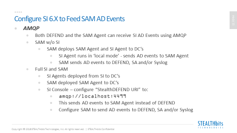
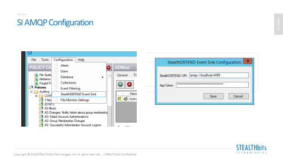
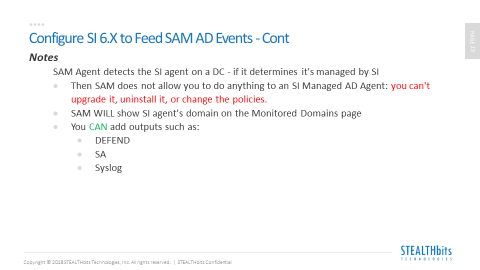

Summary: Feeding SI AD events to SAM using AMQP
Issue: In some environments SI is used for general purpose real time AD event collection and notification but customer also wants to send AD Events to SA and DEFEND. If need was for DEFEND only no problem as SI can send directly to DEFEND but what about SA? One approach is to let SI do the initial AD event collection then forward that data to SAM and use SAM to distribute the data to SA, DEFEND etc.
Instructions:



Product: StealthINTERCEPT
Module: File Activity Monitor - Windows;SI - Windows Agent
Versions: SI 6.x SAM 4.x
Resolved In: SI 6.x SAM 4.x
Legacy Article ID: 2390